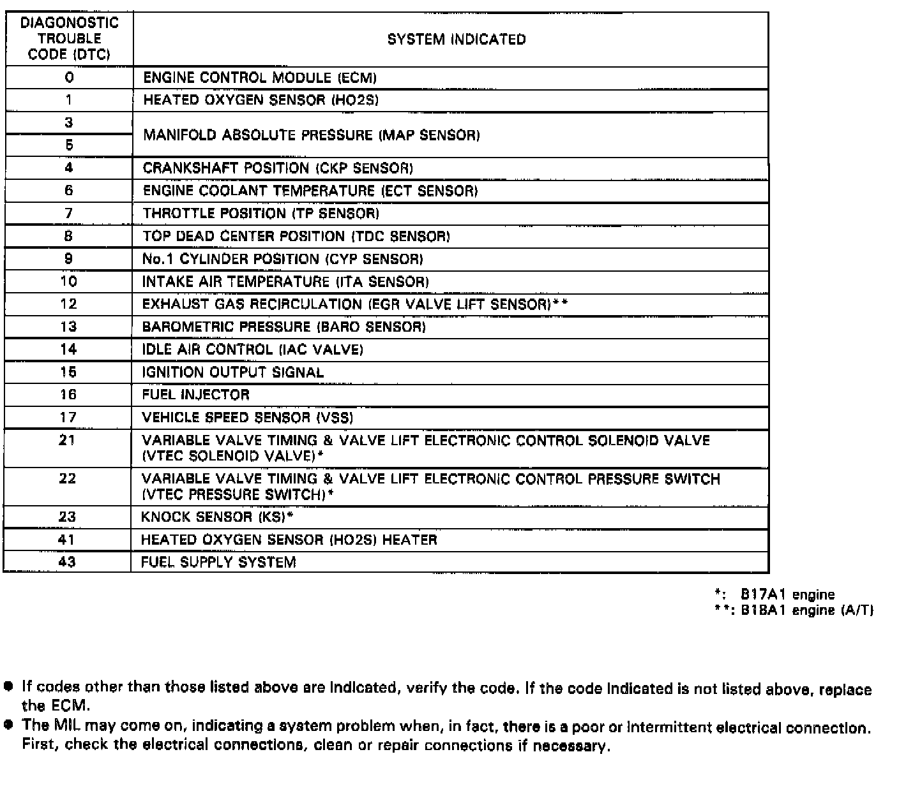
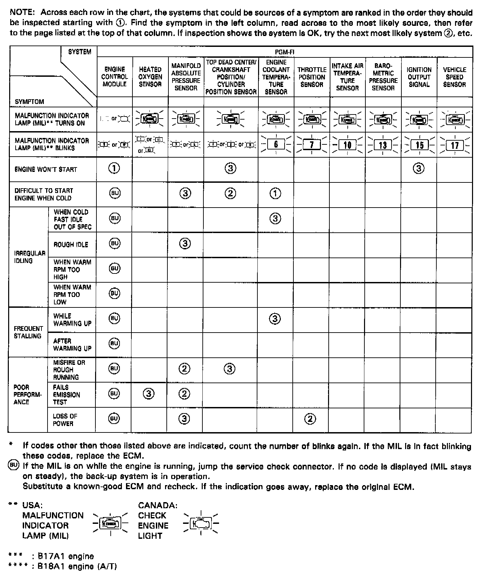
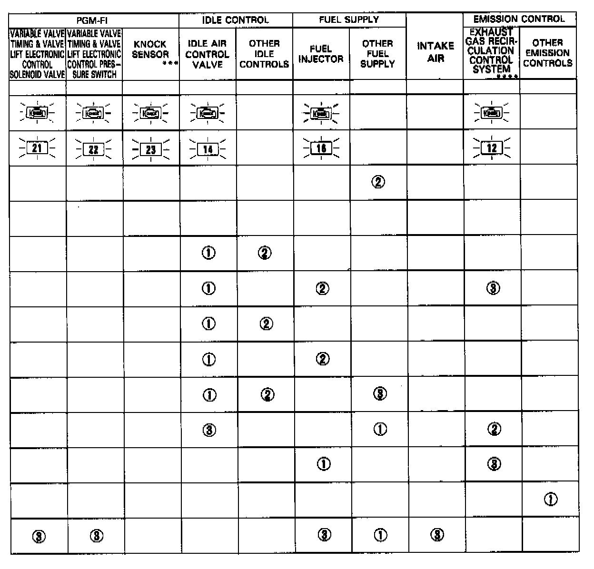

Operation CHARM
: Car repair manuals for everyone.
Home
>>
Acura
>>
1993
>>
Integra L4-1834cc 1.8L DOHC FI
>>
Repair and Diagnosis
>>
A L L Diagnostic Trouble Codes ( DTC )
>>
Testing and Inspection
>>
Diagnostic Trouble Code Descriptions
>>
DTC List - Fuel and Emissions
DTC List - Fuel and Emissions

TROUBLE CODE INDEX


Trouble Code Symptom Index